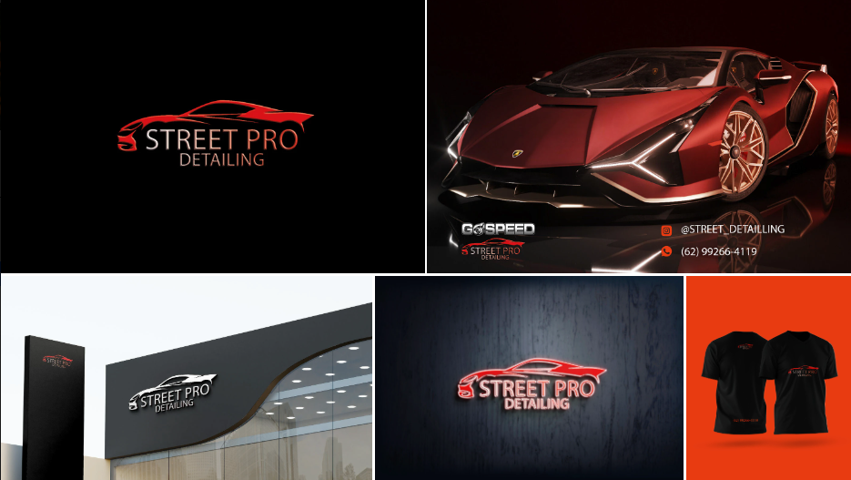
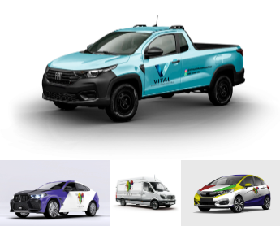
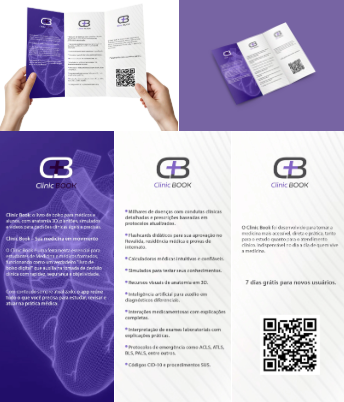
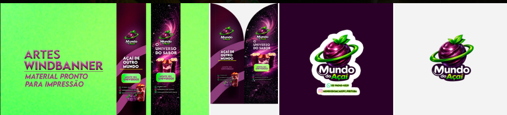

- Identidade visual
- Artes impressas
- Social media e criativos
- Landing pages e interfaces
Portfolio Winc
Projetos, categorias e entregas com direção visual.
Esta página organiza o portfolio da Agência Winc por frentes de atuação para facilitar navegação, apresentação comercial e prova de repertório.
Categorias
Uma organização pensada para apresentar repertório de forma clara e comercial.
Marcas, logotipos, linguagem visual e sistemas para posicionar com clareza.
Espaço ideal para reunir branding, redesign, paletas, tipografia e desdobramentos de identidade.
Materiais gráficos para presença física, apresentação e venda offline.
Inclua cartões, folders, fachadas, panfletos, papelaria, embalagens e outras peças impressas.
Criativos de campanha, conteúdo visual e peças para performance.
Área para mostrar variações de anúncios, carrosséis, reels e linhas criativas aplicadas ao digital.
Páginas e experiências pensadas para conversão, captação e autoridade.
Use esta categoria para demonstrar páginas de captura, sites promocionais, interfaces e funis.
Identidade visual
Cases com construção de marca, aplicação e desdobramento visual.
Alguns projetos já organizados como vitrine para mostrar conceito, presença de marca e coerência entre logo, apresentação e aplicação.

Street Pro Detailing
Identidade com apelo automotivo, contraste forte e leitura premium.
Direção visual criada para reforçar performance, acabamento e presença de marca em diferentes pontos de contato.
- Logo principal com assinatura forte para nicho automotivo.
- Aplicação em fachada, uniforme e peça promocional.
- Estética pensada para destacar a marca no físico e no digital.
Materiais gráficos
Materiais gráficos para presença física, apresentação e venda offline.
Aqui entram peças pensadas para circular no mundo real: sinalização, impressão, apresentação comercial e comunicação visual aplicada.

Vital Vidros e Esquadrias
Aplicação de marca em frota para gerar presença nas ruas.
Estudo de comunicação visual para veículos com foco em reconhecimento, leitura rápida e reforço da identidade da empresa.

Clinic Book
Folder institucional para apresentar produto, proposta e benefícios.
Material voltado para comunicação clara, apresentação comercial e apoio à captação por meio de folder com QR code e leitura objetiva.

Mundo do Açaí
Windbanner com apelo promocional e material pronto para impressão.
Peça criada para ponto físico, com chamada visual forte, linguagem de campanha e adaptação para produção gráfica.
Portfolio em expansão
Enviar materiais